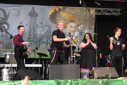
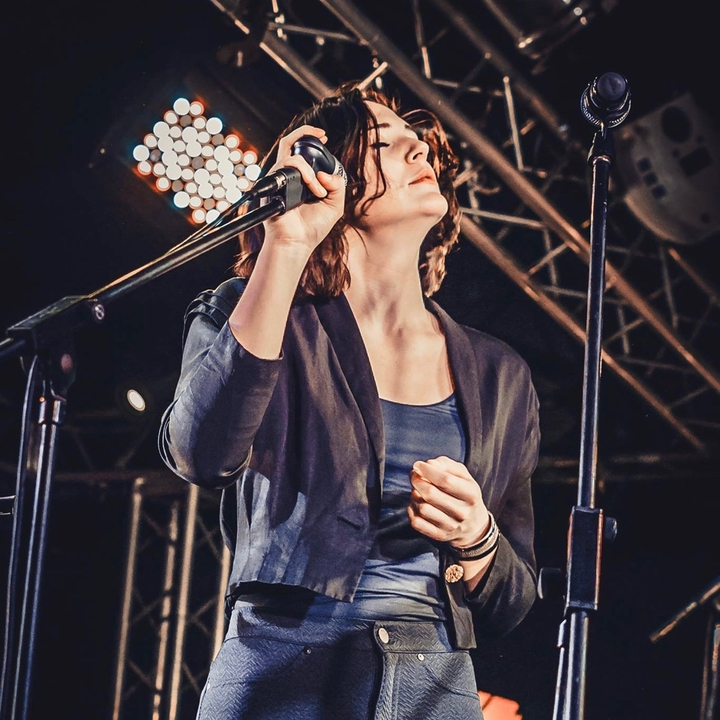
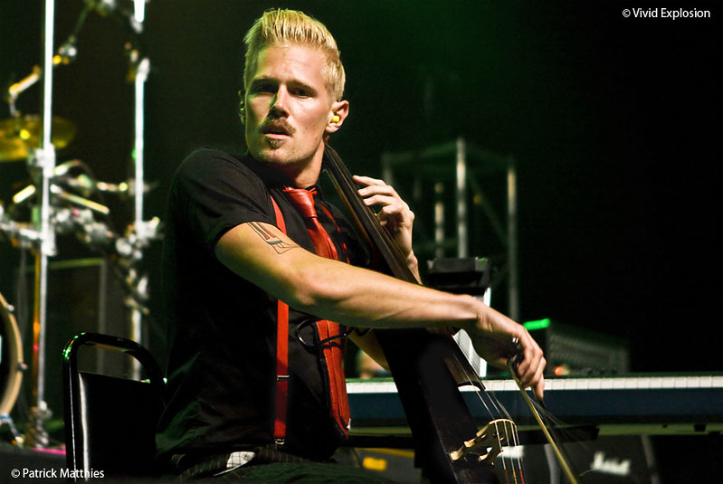
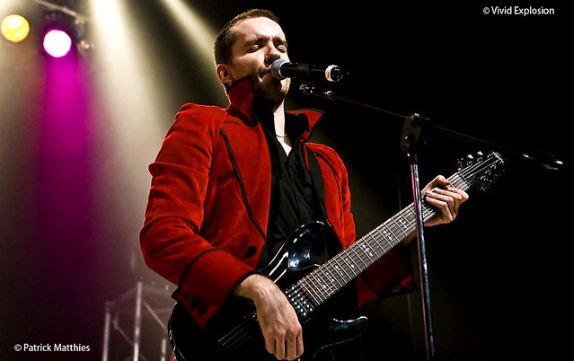
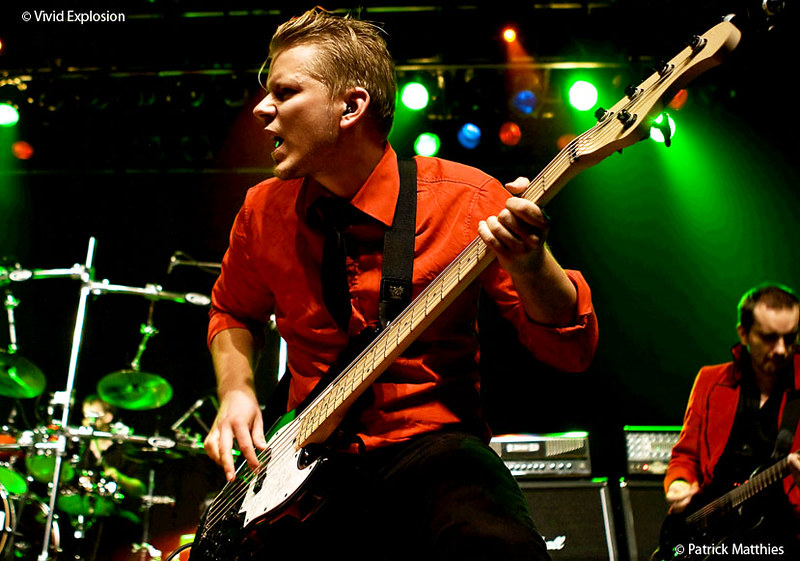
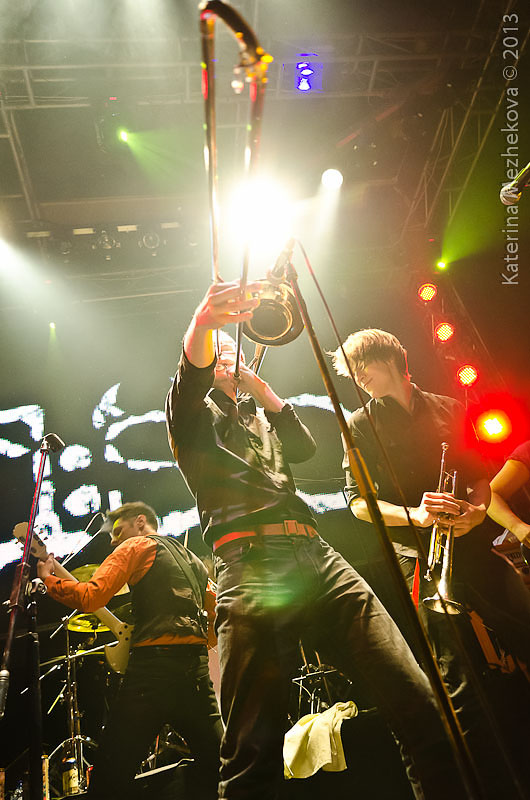
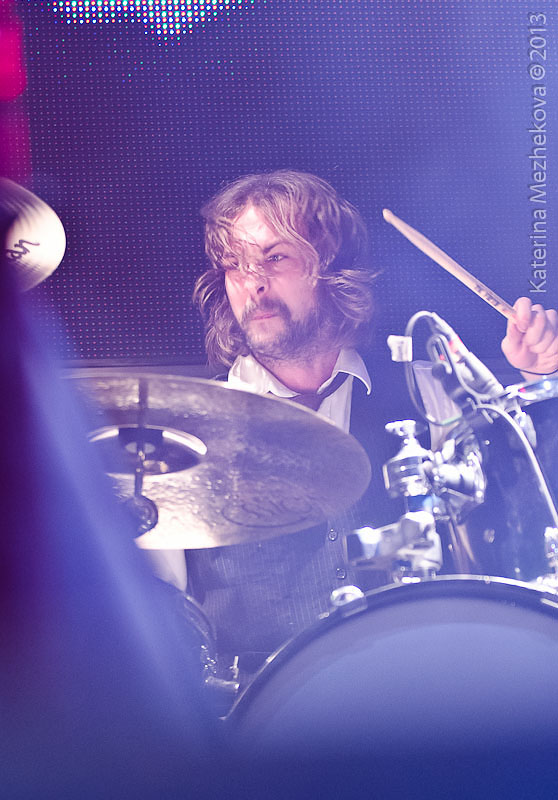

Diablo Swing Orchestra, also shortened DSO, is a Swedish avant-garde metal band formed in 2003. They have released five albums: The Butcher's Ballroom (2006), Sing Along Songs for the Damned & Delirious (2009), Pandora's Piñata (2012), Pacifisticuffs (2017), and Swagger & Stroll Down the Rabbit Hole (2021). Known for its blend of different genres, the band mixes numerous influences, most prominently from heavy metal, rock, swing, progressive, and classical, although various other influences are frequently mentioned by critics. The line-up features several instrumentists uncommon for rock or metal bands, such as a cellist, a trumpeter, and a trombonist, while their albums often prominently feature string and brass sections.
Diablo_Swing_Orchestra_at_Global_East_Rock_Festival_2010/28/29

Kristin Evegård - Vocalist

Johannes Bergion - Cellist & Backing Vocalist

Daniel Håkansson - Guitarrist & Vocalist

h6ontus Mantefors - Guitarrist

Andy Johansson - Bassist

Daniel Hedin - Trombonist
Martin Isaksson - Trumh6etist
